兩根柱子拆不掉。我們讓整個空間彎過去。你走一圈，一根都找不到。
Two columns could not be removed. We bent the entire interior instead. Walk the whole floor and you will not find either one.
01
它是傳統的樑柱結構。這種房子很誠實，該撐的地方都撐住了，結構上一點問題也沒有。問題全部在平面上：那兩根柱子拆不掉，也移不走，戶內每一條線都得先讓它們過。最早的吧檯是橫的，不是因為好看，是因為它得讓開柱子。
一般的做法是接受。柱子包成方的，家具繞著擺，住久了你就會習慣。我們比較頑固，沒有打算習慣。屋主要的也不是標準答案，他不要制式的一字型吧檯，他要吧檯圍著空間的中心。
The building is a conventional beam-and-column structure. It is an honest system: everything that needs carrying is carried, and structurally there is nothing wrong with it. The problem is entirely in the plan. Two of those columns cannot be removed or moved, and every line of the interior has to give way to them first. The original bar ran straight, not for looks, but because it had to clear a column.
The usual answer is to accept this. Box the columns square, arrange the furniture around them, and in time you stop noticing. We are stubborn, and had no intention of getting used to it. Nor did the client want the standard answer: not a straight bar, but one that wraps the centre of the room.
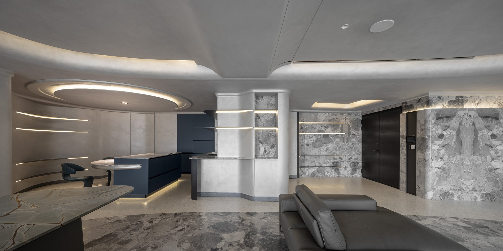
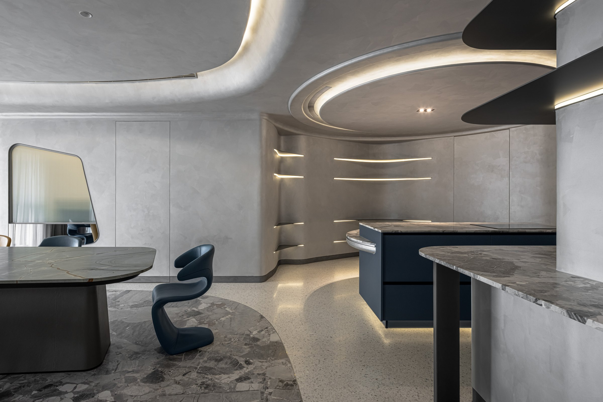
02
所以我們讓整個空間彎起來。牆彎，天花跟著彎，層板也跟著彎，轉角全部拿掉。弧線在這裡做兩件事：一件是帶著視線走，眼睛沒有地方停，就會一直往前；另一件是把那兩根礙眼的柱子吃進面裡。摸得到，看不到。第二件不會有人發現，那正是它該有的樣子。
So we curved the whole interior. The walls curve, the ceiling follows, the shelving follows, and every corner is gone. The curve does two jobs here. One is to carry the eye: with nothing to stop it, it keeps moving forward. The other is to swallow those two columns into the surface. You can touch them. You cannot see them. Nobody notices the second job, which is exactly as it should be.
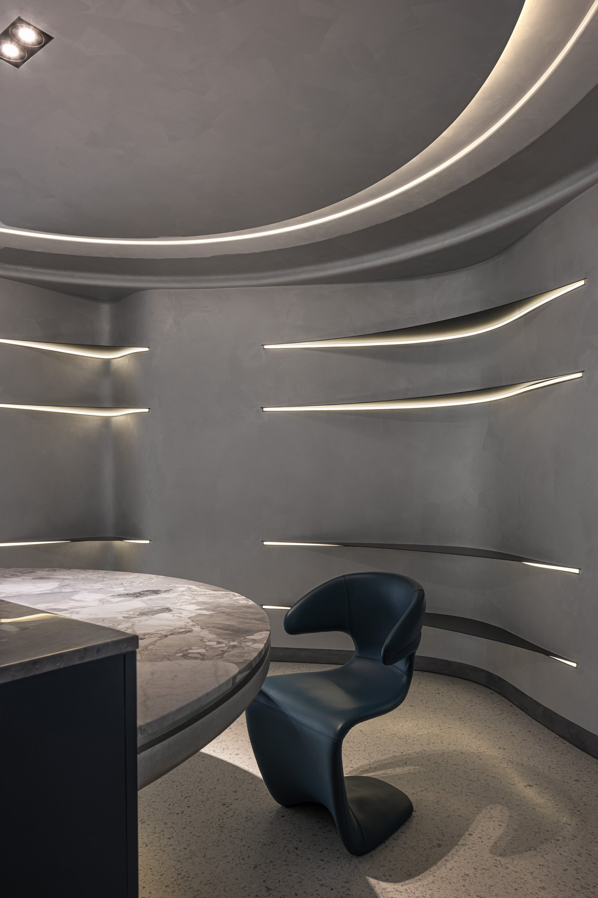

03
吧檯要圍著中心，它就不能是直的。而一個東西變成圓的之後，旁邊的東西很難再是方的。公共區最後有三個圓，形狀和軸向都不一樣。最大的是橢圓，罩著整個公共區，天花一個，地坪一個，上下對得上。正圓就是吧檯那一組，天花一個，檯面一個。站在客廳，一個圓在你頭上，一個圓在你腳下，中間那個位置是你的。
天花的圓在木作階段做，地坪的圓在泥作階段做，中間隔了幾個月，兩批工班沒有碰過面。兩個圓要在垂直方向對得上，放樣就得在最前面一次定死。之後沒有人可以在現場說再看看。
A bar that wraps the centre cannot be straight, and once one thing is round it is hard for anything beside it to stay square. The public area ended up with three circles, no two sharing a shape or an axis. The largest is an ellipse covering the whole public area, one in the ceiling and one in the floor, aligned. The true circle belongs to the bar, one overhead and one in the counter. Stand in the living room and one circle is above you, one below, and the place between them is yours.
The ceiling circles were built in joinery, the floor circles months earlier in the wet trades, by two crews who never met on site. For the two to align vertically, the setting out had to be fixed once, at the very beginning. Nothing was left to be judged later on site.

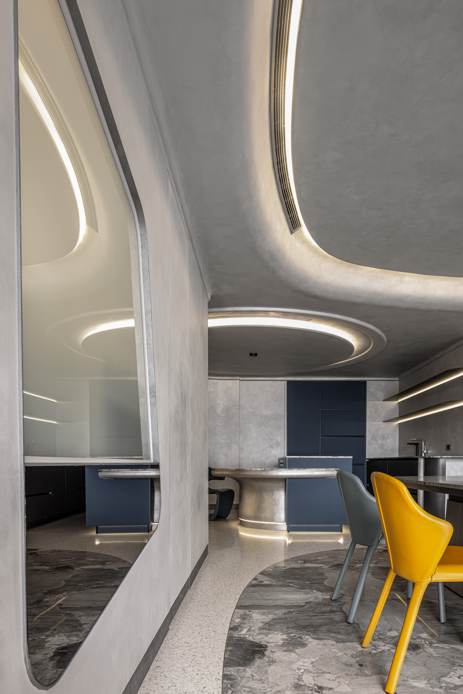
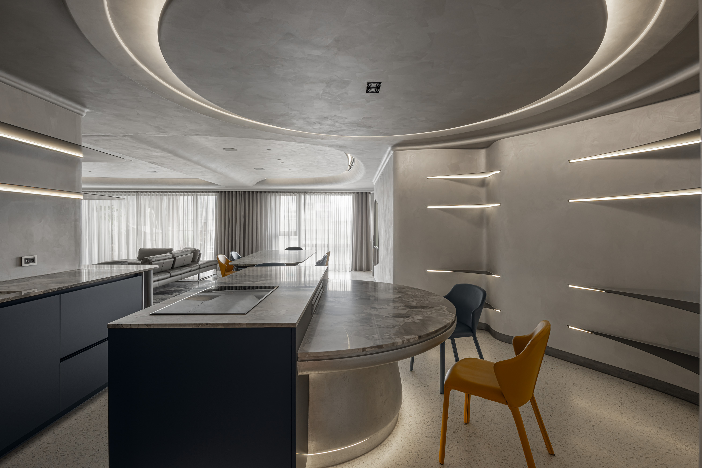
04
面要連續，材料也得跟著挑。石材上不了曲面，所以只留在幾個位置：主視覺那面牆和地坪的橢圓是同一塊多尼亞灰，站起來是牆，躺下去是地。它是角礫岩，碎掉的石塊被重新膠結在一起。地坪大面積的水磨石是同一件事，只是換人做。
牆和天花用的是抹得上曲面的義大利塗料，調成接近整體灰度的顏色，弧走到哪裡它就跟到哪裡。那個灰不是現成的，是從水磨石和多尼亞灰裡萃出來的。先有地上和牆上的兩種石頭，才有牆面和天花的顏色。
石材是機器下料的，一節一節切好，現場再接起來。形狀機器做得到，面做不到。機器磨過的面會有折光，同一片石上反光率不一樣。曲面一有高光，光就會沿著弧拉出一條假的邊，人看到的是那條高光，不是形。所以霧面只能用手，一段一段磨，磨到反光壓掉才停。這跟石材硬不硬沒有關係，霧面是一種感受，機器給不了。
A continuous surface narrows the choice of material. Stone will not go round a curve, so it is kept for a few positions: the feature wall and the ellipse in the floor are cut from one grey breccia marble, standing up as the wall and lying down as the floor. A breccia is broken rock cemented back together, and the terrazzo underfoot is the same idea made by hand.
The walls and ceiling are Italian plaster, mixed to sit inside the same range of greys and able to follow the curve wherever it goes. That grey was not taken off a chart. It was drawn out of the terrazzo and the marble: the stones came first, and the walls and ceiling were matched to them.
The stone itself is machine-cut, section by section, and assembled on site. A machine can give you the shape. It cannot give you the surface. A machine-ground face refracts unevenly, so reflectance varies across a single slab, and on a curve any highlight draws a false edge along it: what you read is the highlight rather than the form. The matte was ground by hand, section by section, until the sheen was gone. This has nothing to do with the hardness of the stone. Matte is a feeling, and a machine cannot give it to you.
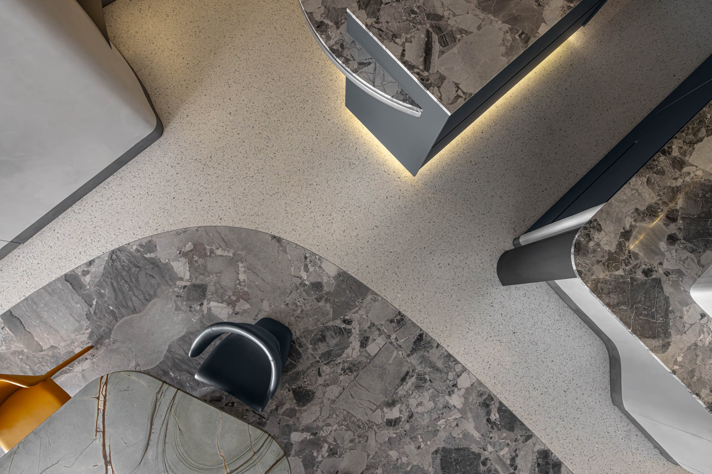
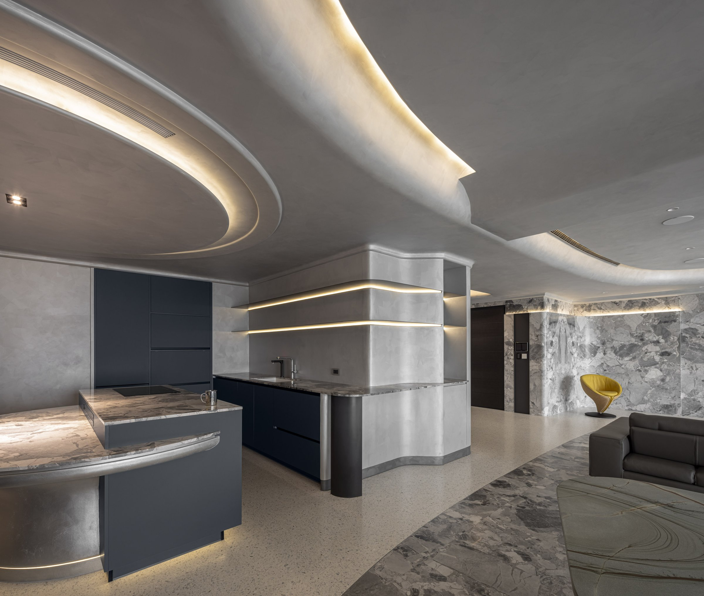
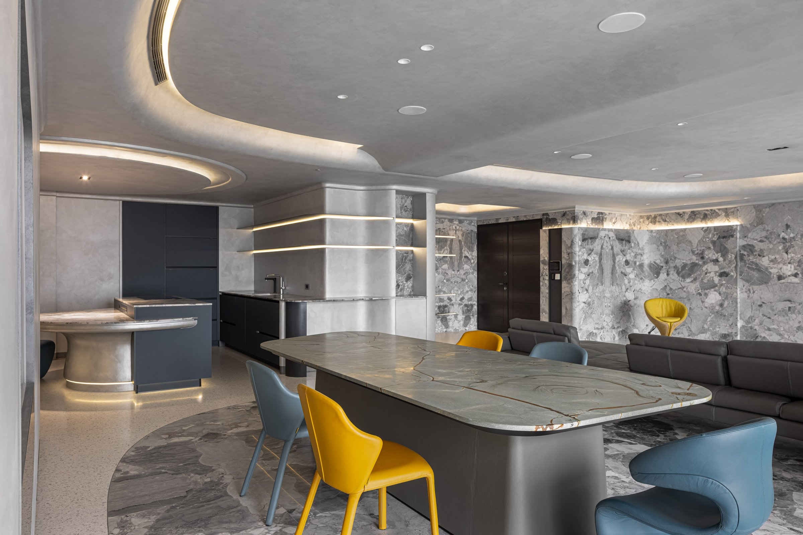

05
顏色是討論出來的，最後選了冷調。公共區就只有一種底色，灰。藍只落在櫃體和一間浴室。
The palette was decided in conversation, and it came out cold. The public area holds a single ground tone of grey, with blue kept for the cabinetry and one bathroom.
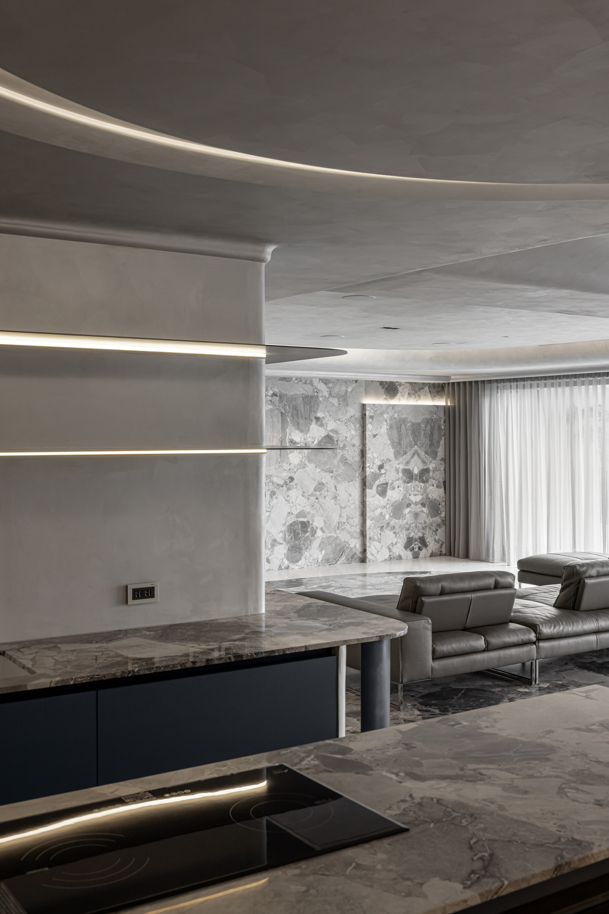
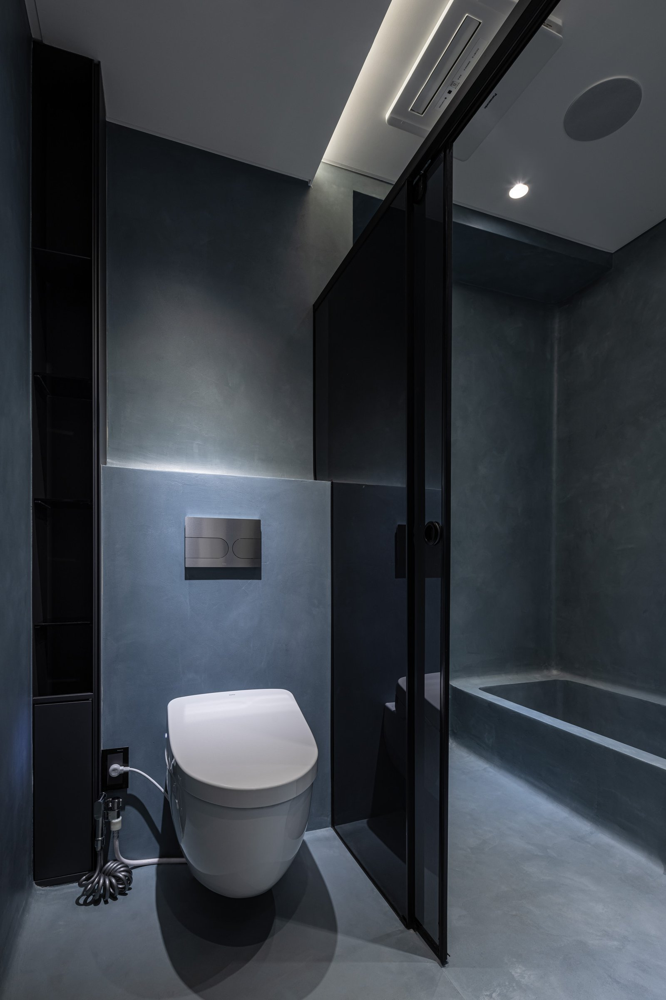
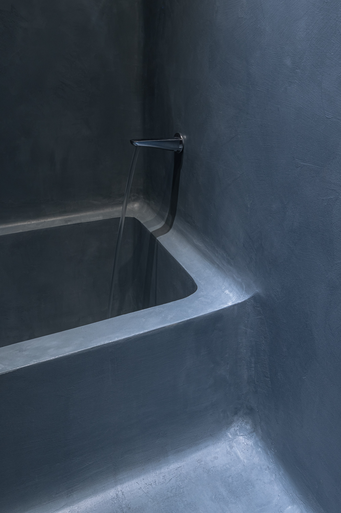
06
轉角拿掉之後，空間少了一樣東西：邊。方正的房子靠陰影和轉角告訴你哪裡是牆、哪裡是天花，弧沒有這些。所以邊要用光畫。塗料與石材的交界、弧形天花的邊緣、櫃體的底部，都留了一道溝縫給燈帶。看不到燈，只看得到光。光沿著弧走，視線跟著光走，一路走到落地窗。外面是陽台，再遠是山。紗簾沒有拉開，山在那裡，你知道，只是今天不看。
Removing the corners takes something away: the edge. A square room uses shadow and corner to tell you where the wall ends and the ceiling begins. A curve has neither, so the edges have to be drawn with light. A recess is left for the strip wherever materials meet: the junction of plaster and stone, the edge of the curved ceiling, the underside of the cabinetry. The fixture is never visible, only the light. It runs along the arc, the eye follows it, and both arrive at the window. Beyond it is the terrace, and beyond that the mountains. The sheers stay closed. The mountains are there, and you know it, and today you are not looking.
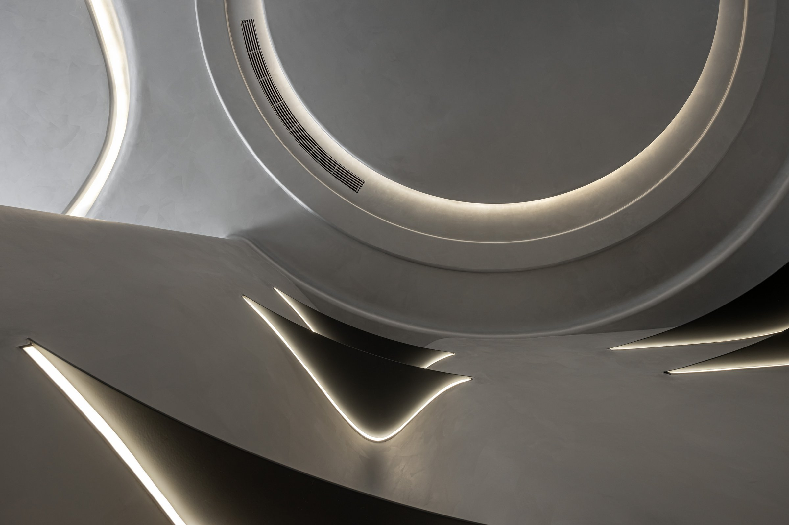
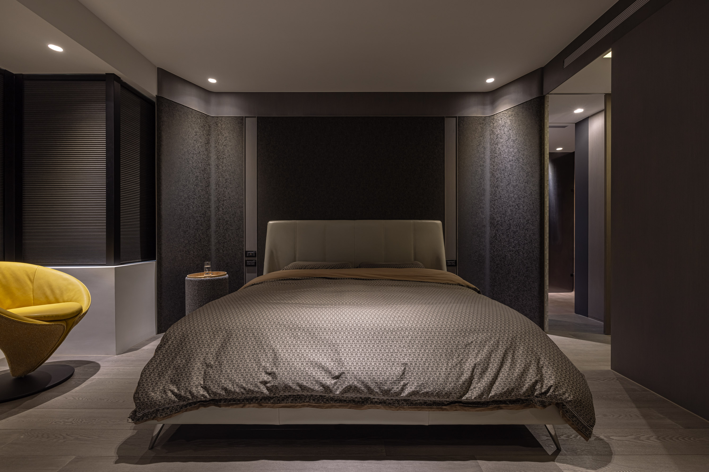

07
弧面要連續，門就不能有框。門片和牆做成同一個面，關起來分不出哪裡是門。所以這個家看起來比實際單純。站在公共區，你以為看到的就是全部。推開一片牆，後面是書房；穿過書房，才是主臥。公共區旁邊那道弧牆的後面，還有一間 KTV。房子沒有變大，只是它不打算一次讓你看完。
走到主臥，弧線就收手了。地上換成木頭，牆換成深色的織物，光也變黃了。主浴接著走下去，牆面是赭褐色的藝術漆，內角一樣是圓的，但這裡的圓不為了藏東西，只為了好清。轉角的圓弧是 3D 列印直接成型，當基底用，上面做面層、粉光，最後才上藝術漆。整間浴室沒有一個 90 度內角。直角的內縫會積水垢，刷子伸不到底，圓角沒有那條縫。
同一個家，兩種溫度。一邊待客，一邊睡覺。門一關，外面那些弧和那些光全部留在外面。
A continuous surface leaves no room for a door frame. The leaves are made flush with the wall, and closed, you cannot tell where the door is. So the home looks simpler than it is. Standing in the public area you assume you are seeing all of it. Push one panel of wall and there is a study; walk through the study and you reach the main bedroom. Behind the curved wall beside the public area there is a karaoke room. The house has not grown. It simply declines to show itself all at once.
At the main bedroom the curve stops. The floor turns to wood, the walls to a dark textile, and the light turns yellow. The main bathroom carries on from there, its walls in an ochre art plaster, its internal corners rounded as everywhere else, though here the radius is not hiding anything. It is there to be cleaned. The rounded corners are 3D-printed directly and used as the substrate; a skim coat and a smoothing coat go over that, and the plaster goes on last. Not one internal right angle remains. A square internal joint collects scale where no brush reaches; a radius has no joint to collect it.
One home, two temperatures. One half receives guests, the other half sleeps. Close the door and all those curves and all that light stay outside.

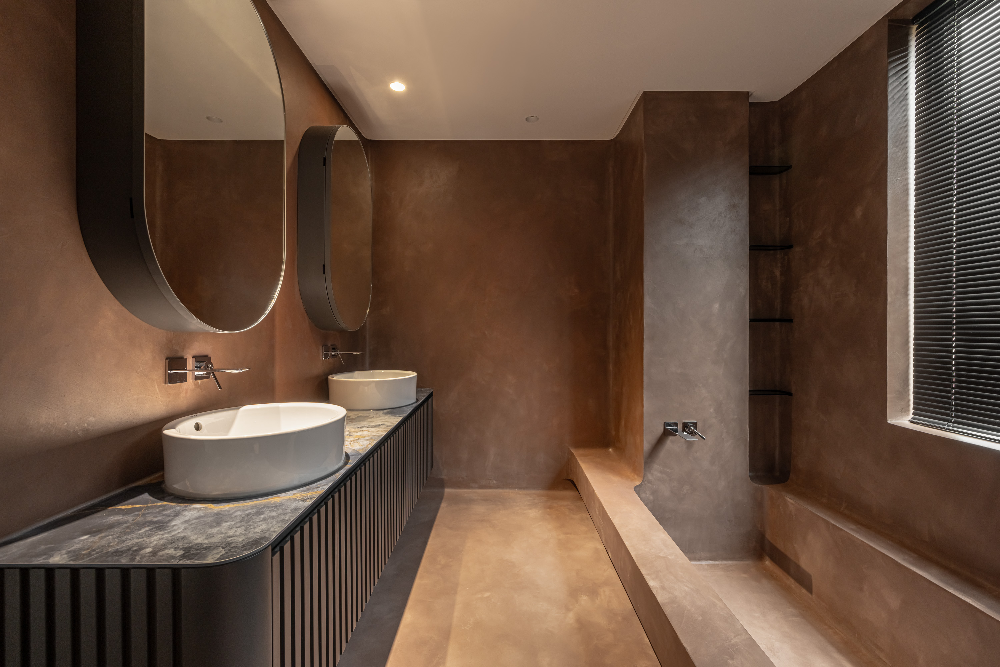
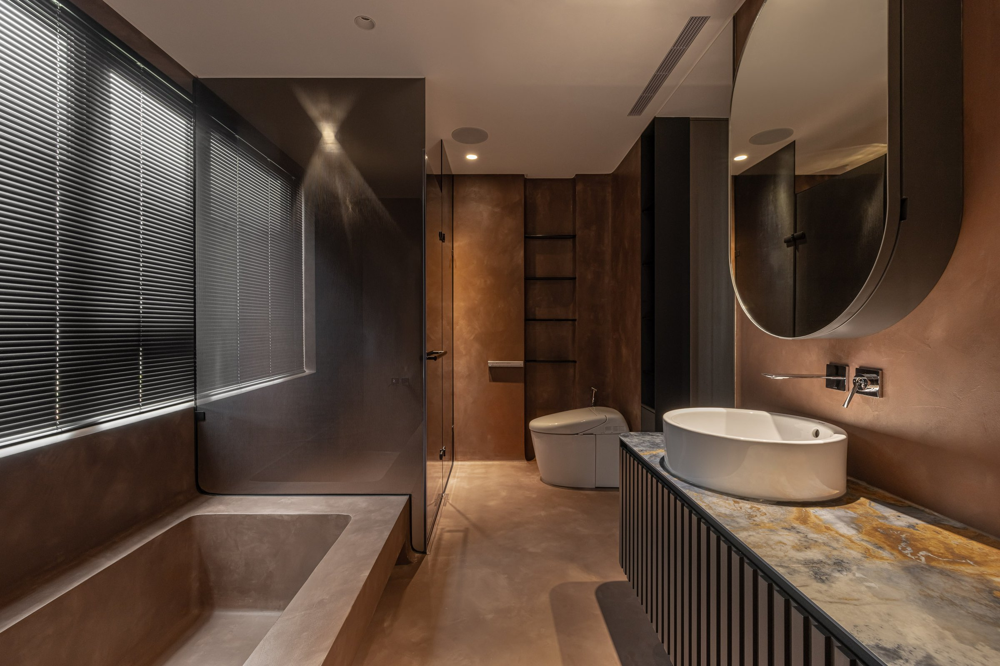
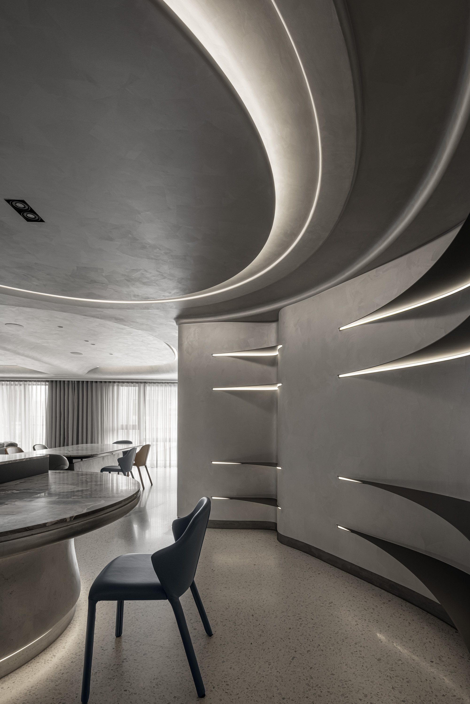
08
兩根柱子還在。一根都沒有少，也一根都看不到。
一個家裡的每一個位置，都應該是留給人的。
The two columns are still there. Neither has gone anywhere, and neither can be seen.
Every place in a home should be one that was kept for a person.
All Photos